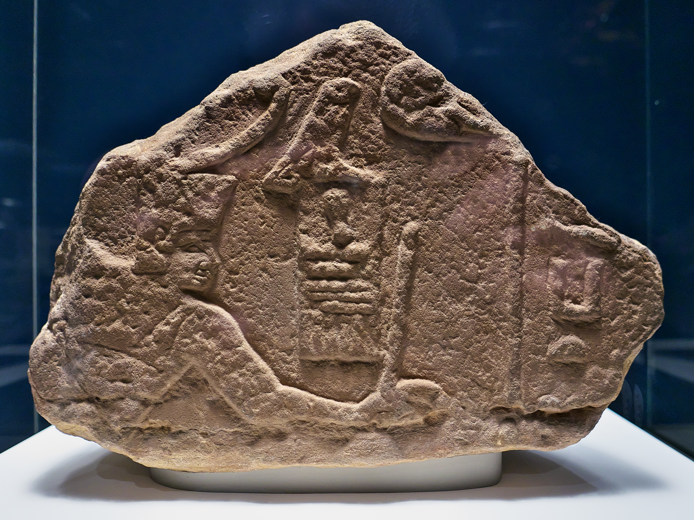
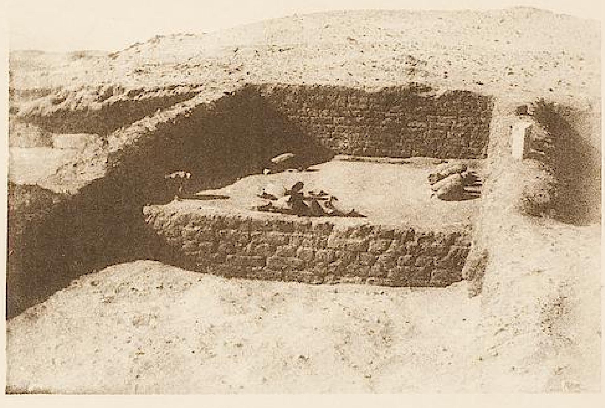
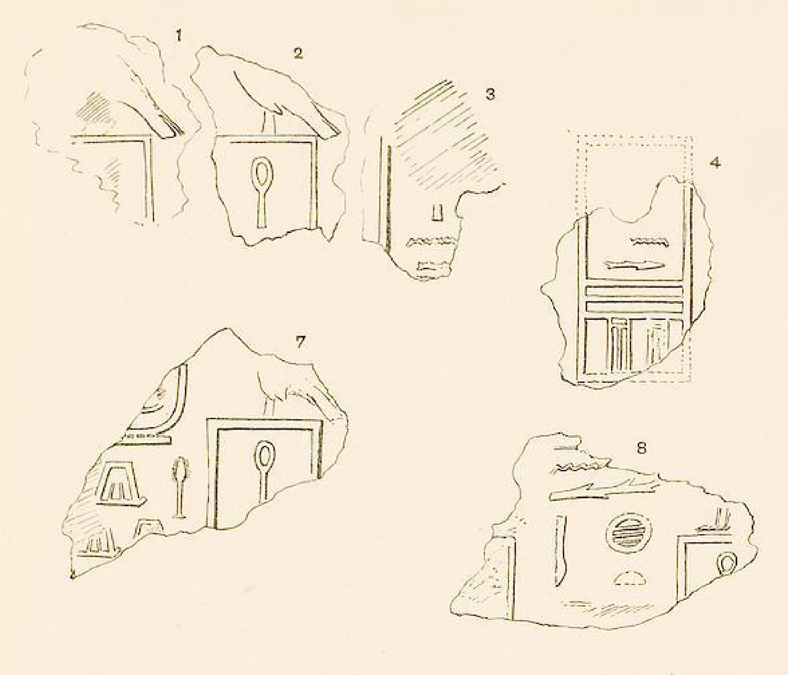
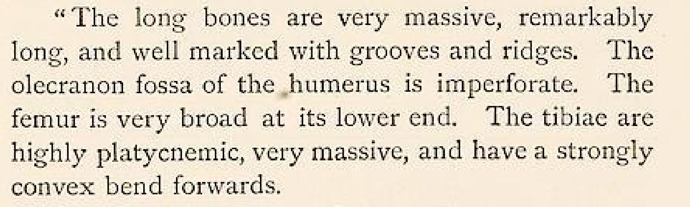
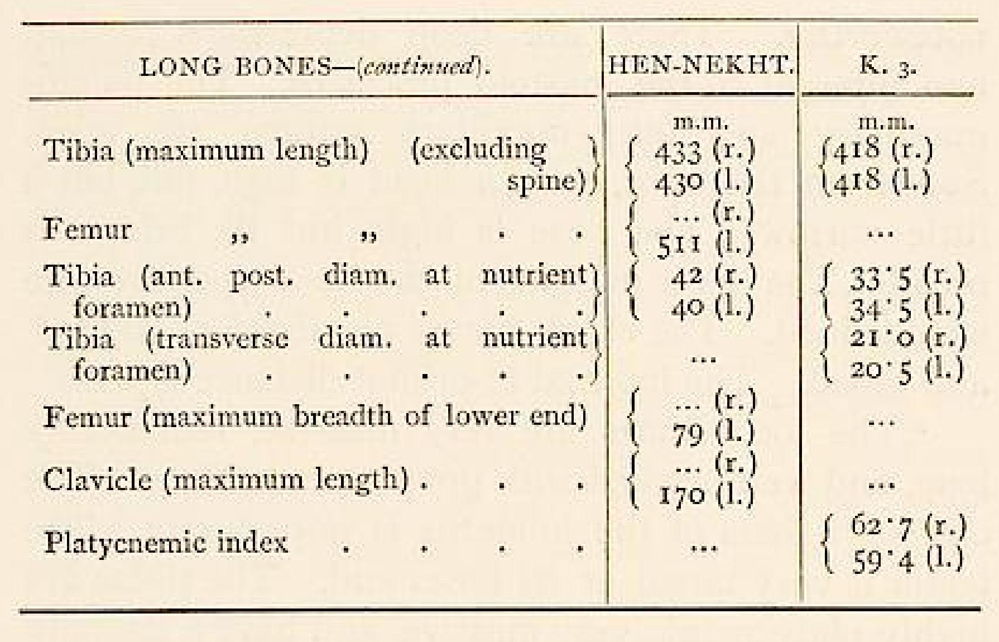
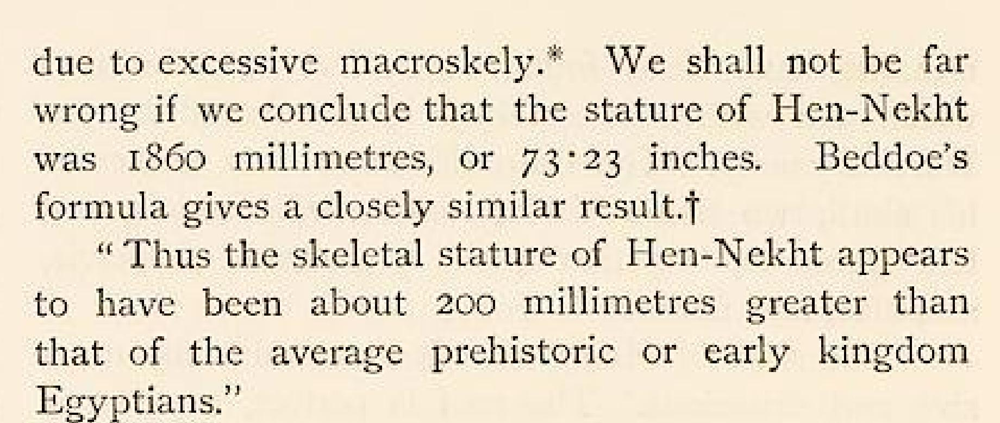
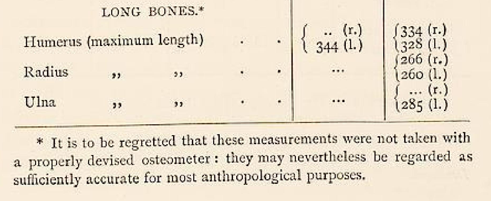

A KING’S NAME
Sanakht’s royal name was recovered among seal impressions associated with K2.
Ancient Egypt · Third Dynasty · Investigation 01
A royal name. An extraordinary skeleton. One unanswered question.
A man of exceptional height was recovered from a monumental tomb at Beit Khallaf. Material bearing King Sanakht’s name was found there too. The evidence does not yet show that the name and the bones belonged to the same person.
Open the case file
Watch the story
The companion Reel uses Hollywood-scale artistic reconstruction. This investigation examines the historical, archaeological, and scientific evidence behind it.
The two questions
The answers require different evidence. A medical interpretation of the skeleton cannot identify the person buried in K2.
Before the giant, there was a king
Sanakht is attested as a Third-Dynasty king. A relief from Wadi Maghara in Sinai bears his royal name and depicts him; the British Museum identifies the surviving sandstone fragment as EA691.
None of this tells us how tall he was.
SANAKHT • WADI MAGHARA • SINAI

Sanakht was an attested Egyptian ruler whose royal name survives on this Third-Dynasty monument.
His height—or that the unusually tall man buried in K2 was Sanakht.
Beit Khallaf · Egypt
John Garstang excavated the large mudbrick mastaba known as K2 at Beit Khallaf during the 1900–01 campaign. The tomb and its burial are documented; the identity of its occupant is another question.
The tomb is real. The royal attribution is an interpretation.
K2 • BEIT KHALLAF • EGYPT

Archaeologists excavated the monumental Third-Dynasty tomb designated K2 at Beit Khallaf.
That K2 was Sanakht’s royal tomb—or that the human remains recovered there belonged to Sanakht.
An archaeological association
Seal impressions bearing Sanakht’s name were recovered from K2. Garstang treated them as evidence for identifying the tomb with the king. The objects establish a connection to Sanakht; they do not by themselves name the person whose bones were found there.
The neighboring K1 tomb also yielded royal sealings. That context is one reason later scholars have treated a seal and a burial as separate kinds of evidence.
SANAKHT SEALINGS • K2 • BEIT KHALLAF

Seal impressions bearing Sanakht’s royal name were recovered from K2.
That the person buried in K2 was Sanakht.
The identification gap
Archaeological association is meaningful. It is not a personal identification of the K2 skeleton.
Then they found the man
The published estimate for the K2 individual is about 1.87 metres. That was exceptionally tall in his ancient Egyptian setting.
Estimated stature from historical skeletal documentation; figures are approximate.
K2 • BEIT KHALLAF • EGYPT
1.86 m 1903 reported stature estimate · about 6 ft 1 in



The 1903 report recorded long-bone dimensions and estimated the K2 individual’s stature at 1.86 m.
That the man was Sanakht, or that stature and historical measurements alone diagnose gigantism.
1903 caveat: no proper osteometer was used.
His bones made scientists ask whether he had gigantism.
2017 · A retrospective scientific reassessment
But they weren't examining the bones themselves. They were re-examining the evidence left behind.
Francesco M. Galassi and colleagues assessed previously published anthropometric measurements, reviewed historical photographs, compared the recorded dimensions with anthropological datasets, and tested multiple formulas for reconstructing stature from the published long-bone measurements. They did not freshly examine the physical skeleton.
Different reconstruction methods produced different estimates.
The question went beyond “Was he tall?”
“Was his growth outside the normal biological range for his population?”
The published lengths were unusually large relative to ancient Egyptian comparison populations. Against recorded Egyptian male royals, the study reported an average stature Z-score of approximately 3.5.
Compared with the royal sample, most facial dimensions remained within two standard deviations; bigonial breadth was the exception.
THE 2017 TEAM CONCLUDED THAT THE K2 INDIVIDUAL PROBABLY HAD GIGANTISM.
The researchers described the facial evidence for acromegaly as only faintly suggestive. They did not establish a definitive acromegaly diagnosis.
The researchers noted that inspection of the skeleton’s sella turcica and genetic analysis might corroborate the anthropometric diagnosis. Neither test would automatically identify the man as Sanakht. Medical diagnosis and historical identification remain separate questions.
The 2017 researchers argued that he probably had gigantism.
That remains unproven.
Source: Galassi FM, Henneberg M, de Herder W, Rühli F, Habicht ME. “Oldest case of gigantism? Assessment of the alleged remains of Sa-Nakht, king of ancient Egypt.” The Lancet Diabetes & Endocrinology. 2017;5(8):580–581. DOI ↗ · Paper and peer-reviewed supplementary appendix ↗
Act VII · The identity break
THE SCIENCE ANSWERED ONE QUESTION.
IT OPENED ANOTHER.
Sanakht’s royal name was recovered among seal impressions associated with K2.
K2 was a substantial Third-Dynasty burial complex at Beit Khallaf.
K2 contained the remains of an unusually tall male. Later researchers assessed the historical record as consistent with probable gigantism.
The connection
BUT DO THEY BELONG TO THE SAME MAN?
The identification problem
Garstang associated K2 with the ruler he called Hen-Nekht or Sa-Nekht largely through royal seal impressions recovered from the tomb. That connection matters. Material bearing a ruler’s name does not, by itself, identify the person buried there. Later scholarship has treated the royal attribution of the monumental Beit Khallaf tombs more cautiously.
Act VIII · The cold case
The K2 burial was excavated during Garstang’s Beit Khallaf campaign. The remains of an unusually tall male were documented.
Garstang and Myers reported that the Cairo Museum then held skeletal material associated with “Hen-Nekht,” including the skull and several long bones.
Researchers reassessed historical measurements, photographs, and comparisons without a fresh examination of the skeleton. Their conclusion was probable gigantism; the man’s identity remained unresolved.
THE PRESENT LOCATION OF THE ALLEGED REMAINS IS UNCERTAIN.
If the remains could be securely located and their provenance established, renewed osteological examination and modern imaging could test aspects of the historical diagnosis. The 2017 authors also discussed inspection of the sella turcica and genetic analysis as possible ways to corroborate the anthropometric assessment.
FINDING THE BONES WOULD NOT AUTOMATICALLY PROVE THEY BELONGED TO SA-NAKHT.Medical diagnosis and historical identification remain separate questions.
The 2017 researchers concluded that he probably suffered from gigantism.
The verdict
The evidence supports the giant man.It does not yet prove the giant pharaoh.
The door beyond
Even the biggest giants succumb to time.
But sometimes the evidence survives them.
Renewed osteological examination, modern imaging, and other appropriate analyses could tell us more about the K2 individual. Even then, a medical finding would not automatically identify him as Sanakht.
Somewhere between a king’s name
and a giant’s bones
is a man we still haven’t identified.
Evidence desk
Primary museum record for the Wadi Maghara relief.
Campaign dates, director, and excavation bibliography.
K2 report, seal impressions, plans, and historical skeletal documentation.
Retrospective assessment; the authors themselves say identification as Sanakht is far from certain.
The official poster is cinematic artwork. The EA691 photograph and Garstang Plates XVII and XIX are authentic evidence; Card #4 uses authentic Garstang measurement scans from printed pages 13–14. No imagery from the design board is used as evidence.